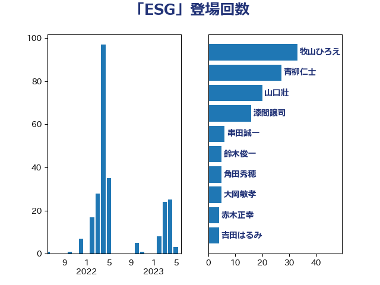

単語「ESG」

| 牧山ひろえ | 立憲民主党 | 33 回 |
| 青柳仁士 | 日本維新の会 | 27 回 |
| 山口壯 | 自由民主党 | 20 回 |
| 漆間譲司 | 日本維新の会 | 16 回 |
| 串田誠一 | 日本維新の会 | 6 回 |
| 鈴木俊一 | 自由民主党 | 5 回 |
| 角田秀穂 | 公明党 | 5 回 |
| 大岡敏孝 | 自由民主党 | 5 回 |
| 赤木正幸 | 日本維新の会 | 4 回 |
| 吉田はるみ | 立憲民主党 | 4 回 |
| 滝沢求 | 自由民主党 | 3 回 |
| 江田憲司 | 立憲民主党 | 3 回 |
| 小野泰輔 | 日本維新の会 | 3 回 |
| 勝俣孝明 | 自由民主党 | 3 回 |
| 青木愛 | 立憲民主党 | 2 回 |
| 西野太亮 | 自由民主党 | 2 回 |
| 萩生田光一 | 自由民主党 | 2 回 |
| 石井苗子 | 日本維新の会 | 2 回 |
| 畦元将吾 | 自由民主党 | 2 回 |
| 熊谷裕人 | 立憲民主党 | 2 回 |
| 末松義規 | 立憲民主党 | 2 回 |
| 徳永久志 | 立憲民主党 | 2 回 |
| 平山佐知子 | 無所属 | 2 回 |
| 山田美樹 | 自由民主党 | 2 回 |
| 務台俊介 | 自由民主党 | 2 回 |
| 伊藤孝恵 | 国民民主党 | 2 回 |
| 中川康洋 | 公明党 | 2 回 |
| 高木宏壽 | 自由民主党 | 1 回 |
| 須藤元気 | 無所属 | 1 回 |
| 遠藤良太 | 日本維新の会 | 1 回 |
| 西村明宏 | 自由民主党 | 1 回 |
| 篠原孝 | 立憲民主党 | 1 回 |
| 田嶋要 | 立憲民主党 | 1 回 |
| 玉木雄一郎 | 国民民主党 | 1 回 |
| 浜野喜史 | 国民民主党 | 1 回 |
| 永岡桂子 | 自由民主党 | 1 回 |
| 林芳正 | 自由民主党 | 1 回 |
| 松原仁 | 立憲民主党 | 1 回 |
| 杉田水脈 | 自由民主党 | 1 回 |
| 末次精一 | 立憲民主党 | 1 回 |
| 日下正喜 | 公明党 | 1 回 |
| 斎藤アレックス | 国民民主党 | 1 回 |
| 後藤茂之 | 自由民主党 | 1 回 |
| 山口晋 | 自由民主党 | 1 回 |
| 大串博志 | 立憲民主党 | 1 回 |
| 古賀篤 | 自由民主党 | 1 回 |
| 住吉寛紀 | 日本維新の会 | 1 回 |
| 世耕弘成 | 自由民主党 | 1 回 |
| 下野六太 | 公明党 | 1 回 |